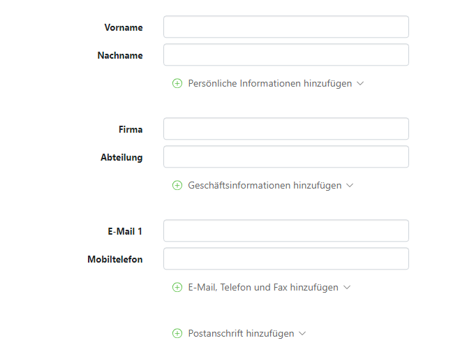
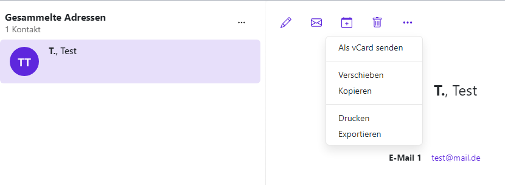
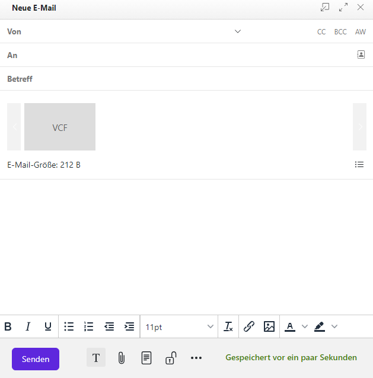

2 Kontakte
Mit dem Modul Kontakte haben Sie ein Werkzeug, um verschiedene Adressbücher zu verwalten. Die darin gespeicherten Adressen können Sie beim Versenden von E-Mails, bei der Termin- oder Aufgabenplanung und an vielen weiteren Stellen einsetzen.
2.1 Allgemeiner Aufbau des Moduls
- Adressbuch-Werkzeugleiste

- Adressbuch-Ordneransicht
- Adressbuch-Navigationsbereich
- Adressbuch-Anzeigebereich
2.2 Verteilerliste hinzufügen
2.2.1 Neue Verteilerliste anlegen
Öffnen Sie als erstes ein Adressbuch in der Ordneransicht. Klicken Sie dann in der Werkzeugleiste auf Neuer Kontakt und anschließend auf Neue Verteilerliste.

Hinweis: Diese Schritte sind nur in Adressbüchern möglich, in denen Sie die Berechtigung zum Anlegen von Objekten haben. Das globale Adressbuch ist hiervon z. B. ausgenommen.
Geben Sie unter Name einen Namen für die Verteilerliste ein. Danach geben Sie im Eingabefeld unter der Überschrift Teilnehmer die E-Mail-Adresse oder den Namen einer Teilnehmerin oder eines Teilnehmers ein.
- Während der Eingabe werden passende Vorschläge für Sie angezeigt. Um einen Vorschlag zu übernehmen, klicken Sie darauf
Um Kontakte aus einem Adressbuch zu wählen, klicken Sie rechts im Eingabefeld auf das Symbol Kontakte auswählen Falls Sie weitere Kontakte hinzufügen möchten, wiederholen Sie diese letzten Schritte entsprechend. Möchten Sie einen Kontakt entfernen, klicken Sie neben dem Kontakt auf das Papierkorb-Symbol.
Klicken Sie abschließend auf Liste erstellen.

2.2.2 Kontakte oder Verteilerlisten bearbeiten
Hinweis: Die folgenden Schritte sind nur in Adressbüchern möglich, in denen Sie die Berechtigung zum Anlegen von Objekten hast. Das globale Adressbuch ist hiervon z. B. ausgenommen.
Wählen Sie zuerst in der Liste einen Kontakt oder eine Verteilerliste aus. Klicken Sie danach in der Werkzeugleiste auf Bearbeiten.
Es öffnet sich ein Fenster, in dem Sie die Daten des Kontaktes bzw. der Verteilerliste einsehen und bearbeiten können. Haben Sie alle gewünschten Änderungen vorgenommen, klicken Sie auf Speichern.

2.3 Adressbuch hinzufügen
Mithilfe von Adressbüchern können Sie Ihre Kontakte organisieren, zum Beispiel unterteilt in berufliche und private Kontakte. Erfahren Sie, wie Sie Adressbücher anlegen, Kontakte aus externen Adressbüchern anwenden und die Anzeige von freigegebenen Adressbüchern bestimmen können.
2.3.1 Persönliches Adressbuch hinzufügen
Unter Meine Adressbücher können Sie persönliche Adressbücher anlegen. Um ein neues Adressbuch anzulegen, klicken Sie auf das Plus (+) neben Meine Adressbücher.

Wählen Sie jetzt das Plus (+) , um ein neues Adressbuch zu erstellen.
Es erscheint ein neues Fenster, in dem Sie Ihr neues Adressbuch benennen können. Soll das Adressbuch öffentlich einsehbar sein, setzen Sie den Haken bei Als öffentlichen Ordner hinzufügen. Klicken Sie abschließend auf Hinzufügen.
2.3.2 Öffentliche Adressbücher
Sie können innerhalb des Moduls Kontakte öffentliche Adressbücher einsehen, welche in der Seitenansicht untereinander aufgelistet sind.

Sie haben die Möglichkeit öffentliche Adressbücher zu Ihren Favoriten hinzuzufügen, Ihre Berechtigungen für dieses Adressbuch einzusehen, das Adressbuch zu exportieren und es auszublenden. Klicken Sie dafür auf das Dreipunkt-Menü neben dem entsprechenden Adressbuch und klicken Sie auf die gewünschte Funktion.

2.4 Neuen Kontakt hinzufügen
Das Modul Kontakte ermöglicht die Verwaltung aller Adressbücher und persönlichen Kontakte.
Das Anlegen neuer und das Bearbeiten vorhandener Kontakte und Adressen erfolgt über die Menüleiste.
Über den Menüpunkt Neuer Kontakt besteht auch die Möglichkeit, Verteilerlisten zu erstellen.
Wenn Sie einen neuen Kontakt hinzufügen möchten, navigieren Sie links zu Meine Adressbücher und wählen Sie ein Adressbuch aus. Klicken Sie nun auf die violette Schaltfläche Neuer Kontakt. Anschließend öffnet sich ein neues Fenster. Jetzt haben Sie die Möglichkeit, die gewünschten Kontaktdaten einzugeben.


Wenn Sie einem Kontakt ein Foto hinzufügen möchten, klicken Sie auf das leere Kontaktfoto. Das Fenster Kontaktfoto ändern öffnet sich. Wenn Sie ein vorhandenes Foto hochladen möchten, klicken Sie auf Ein Foto hochladen. Möchten Sie direkt ein neues Foto mithilfe der Gerätekamera aufnehmen, klicken Sie auf Ein Foto machen. Bei Bedarf können Sie den Bildausschnitt festlegen, indem Sie den Regler unter dem Foto verwenden und das Foto verschieben oder drehen.
Wenn Sie auf Anwenden klicken, wird das Foto hinzugefügt.

Um ein Foto zu bearbeiten oder zu löschen, klicken Sie zunächst auf das Foto. Damit gelangen Sie in eine Editor-Ansicht, in der Sie das Bild über die entsprechenden Schaltflächen drehen können. Verwenden Sie den horizontalen Regler, um die Zoomstufe zu verändern. Wenn Sie näher an das Bild herangezoomt haben, können Sie im Folgenden den Bildausschnitt verändern, indem Sie auf das Bild klicken und es mit gedrückter Maustaste verschieben. Klicken Sie auf Anwenden, sobald Sie mit Ihren Änderungen zufrieden sind, oder wählen Sie Foto entfernen , wenn das Bild ganz gelöscht werden soll.


Der Firma bzw. der Abteilung können auch weitere Informationen hinzugefügt werden. Klicken Sie dafür auf Geschäftsinformationen hinzufügen. Es erscheint ein Dropdown-Menü und Sie können die Informationen um weitere Punkte ergänzen:
- Position
- Beruf
- Raumnummer
- Manager
- Assistent
Sollten Sie mehrer E-Mail-Adressen besitzen, können Sie diese ebenfalls hinzufügen. Klicken Sie dafür auf E-Mail, Telefon, Fax hinzufügen. Es erscheint ein Dropdown-Menü und Sie können die Informationen um weitere Punkte ergänzen:
- E-Mail 2
- E-Mail 3
- Instantmessenger 1
- Instantmessenger 2
- Mobiltelefon (2)
- Telefon (geschäftlich)
- Telefon (geschäftlich 2)
- Telefon (privat)
- Telefon (privat 2)
- Telefon (Zentrale)
- Telefon (weiteres)
- Fax
- Fax (privat)
- Fax(2)

Darüber hinaus haben Sie die Option eine Kategorie Ihres Termins anzugeben, welche Ihnen erscheint, wenn Sie auf den rechten Pfeil neben Kategorie hinzufügen klicken. Die Kategorien sind voreingestellt und es kann Predefined, Important, Business, Private und Meeting ausgewählt werden. Möchten Sie nützliche Notizen hinzufügen können Sie im Textfeld Notiz Ihre Angaben machen. Sollte dieser Kontakt als privater Kontakt eingestuft werden, können Sie die Checkbox Dies ist ein privater Kontakt und kann nicht freigegeben werden anklicken. Außerdem haben Sie die Möglichkeit Benutzerfelder hinzuzufügen. Das können Sie einstellen, indem Sie auf Benutzerfelder hinzufügen klicken. Um dem Termin Anhänge hinzuzufügen, klicken Sie entweder auf Anhänge hinzufügen oder Von Dateien hinzufügen.

2.5 Kontakt löschen
Möchten Sie einen bereits bestehenden Kontakt löschen, müssen Sie zunächst den gewünschten Kontakt auswählen, sodass dieser violett hinterlegt ist. Anschließend wählen Sie in der oberen Leiste das Icon Löschen aus.
Anschließend werden Sie gefragt, ob der Kontakt wirklich gelöschen werden soll. Wenn Sie dies tun möchten, klicken Sie auf Löschen.
2.6 Kontakt verschieben oder kopieren
Sie können Kontakte oder Verteilerlisten in ein anderes Adressbuch verschieben oder kopieren. Das globale Adressbuch ist hiervon allerdings ausgenommen.
So verschieben oder kopieren Sie Kontakte in ein anderes Adressbuch:
Wählen Sie in der Liste einen oder mehrere Kontakte oder Verteilerlisten aus, welche Sie kopieren oder verschieben möchten. Klicken Sie anschließend in der Werkzeugleiste auf das Symbol Weitere Aktionen (Hamburger-Menü) . Danach können Sie auf Verschieben oder Kopieren klicken. Jetzt öffnet sich ein Fenster, in welchem Sie ein Adressbuch auswählen. Bei Bedarf können Sie auch ein neues Adressbuch anlegen, indem Sie auf Ordner anlegen klicken. Klicken Sie nun auf Verschieben beziehungsweise Kopieren.
Tipp: Sie können die gewählten Kontakte bzw. Verteilerlisten auch per Drag & Drop verschieben, indem Sie diese in der Ordneransicht einfach mit gedrückter Maustaste auf ein Adressbuch ziehen.

2.7 Kontakt als vCard versenden
So können Sie Kontakte oder Verteilerlisten als vCard-Anhang in einer E-Mail versenden:
Zu Beginn wählen Sie in der Liste einen Kontakt, eine Verteilerliste oder mehrere Kontakte oder Verteilerlisten aus. Anschließend klicken Sie in der Werkzeugleiste auf das Symbol Weitere Aktionen (Hamburger-Menü). Wenn sie jetzt auf auf Als vCard senden klicken , wird eine vCard versendet.
Anschließend können Sie die Angaben der E-Mail vervollständigen. Wie in einer regulären E-Mail können Sie folgende Daten eingeben:
- E-Mail-Adresse, an die der Kontakt versendet werden soll
- Betreff
- Text der E-Mail
- Anhänge
Um die E-Mail mit der vCard abzusenden, klicken Sie auf Senden.

2.8 Kontakt zu einem Termin einladen
Sie können direkt aus dem Modul Kontakte Termine anlegen und Kontakte oder ganze Verteilerlisten zu diesen Terminen einladen. Wählen Sie zu Beginn einen oder mehrere Kontakte oder Verteilerlisten aus und klicken Sie anschließend in der Werkzeugleiste auf Zu Termin Einladen. Wenn Sie einen einzelnen Kontakt auswählen möchten, klicken Sie alternativ oben in der Detailansicht des Kontaktes auf Einladen. Als letzten Schritt können Sie die Angaben zum Anlegen des Termins vervollständigen. Nähere Angaben hierzu finden Sie unter Termin einstellen.

2.9 Neuen Termin anlegen
So können Sie einen neuen Termin anlegen:
Zuerst öffnen Sie in der Ordneransicht einen Kalender, in dem Sie die Berechtigung zum Anlegen von Objekten haben. Danach klicken Sie in der Werkzeugleiste auf Einladen.

Zuerst müssen Sie einen Titel eingeben.

Um den Beginn und das Ende des Termins festzulegen, müssen Sie unterhalb von Beginnt am und Endet am folgenden Aktionen ausführen:
- Klicken Sie auf ein Datum. Geben Sie ein Datum ein oder wählen Sie ein Datum aus der Datumsauswahl. Bei ganztägigen Terminen aktivierst du Ganztägig
- Klicken Sie auf eine Uhrzeit. Geben Sie die Uhrzeit ein, oder wählen Sie eine Uhrzeit aus der Liste
- Wenn gewünscht, können Sie die Zeitzone für die Start- oder Endzeit festlegen, indem Sie neben einer Uhrzeit auf die Zeitzonen-Schaltfläche klicken. Sie können für die Startzeit und Endzeit unterschiedliche Zeitzonen angeben
 - Aktivieren Sie Wiederholen, wenn sich der Termin periodisch wiederholen soll. Nun erscheint der aktuelle Wochentag in violetter Schrift. Möchten Sie die Wiederholungszeit verändern, klicken Sie auf den violetten Wochentag. Es öffnet sich ein neues Fenster. Hier können nun die terminlichen Aspekte des Termins bearbeitet werden. Haben Sie Ihre gewünschten Änderungen vorgenommen, klicken Sie auf Anwenden.
- Aktivieren Sie Wiederholen, wenn sich der Termin periodisch wiederholen soll. Nun erscheint der aktuelle Wochentag in violetter Schrift. Möchten Sie die Wiederholungszeit verändern, klicken Sie auf den violetten Wochentag. Es öffnet sich ein neues Fenster. Hier können nun die terminlichen Aspekte des Termins bearbeitet werden. Haben Sie Ihre gewünschten Änderungen vorgenommen, klicken Sie auf Anwenden.

Möchten Sie den Termin in einer Videokonferenz abhalten, so wählen Sie unter Konferenz die Möglichkeit Videokonferenz aus. Das System erstellt einen Konferenzraum und generiert den dazugehörigen Link automatisch.

Geben Sie bei Bedarf nun den Ort und eine Beschreibung ein.
Unter Teilnehmer haben Sie die Option, weitere Teilnehmerinnen und Teilnehmer für den Termin einzuladen. Außerdem haben sehen Sie unter Teilnehmer , welche Teilnehmerinnen und Teilnehmer sich bereits in dem Termin befinden. Um weitere Teilnehmerinnen und Teilnehmer in diesen Termin einzuladen, klicken Sie dafür neben dem Feld Teilnehmer und Ressourcen auf das Symbol Kontakt auswählen.
Nun öffnet sich ein neues Fenster mit Ihren Kontakten. Möchten Sie Kontakte hinzufügen, tippen Sie in das Eingabefeld Suchen den entsprechenden Namen des Kontakts ein und wählen ihn anschließend aus. Die ausgewählten Kontakte haben nun einen grauen Hintergrund. Klicke auf Wählen um deine gewünschten Kontakte zu dem Termin hinzuzufügen. Sie haben außerdem die Möglichkeit Kontakte zu filtern und in Ihren verschiedenen Adressbüchern nach Kontakten zu suchen. Die Schaltflächen befinden sich jeweils rechts neben dem Eingabefeld Suchen.

Wenn Sie die Sichtbarkeit Ihres Termins einstellen möchten, können Sie unter Sichtbarkeit auf den rechten Pfeil in der Schaltfläche klicken und Standard, Privat oder Geheim auswählen. Sie können außerdem eine Erinnerung für den Termin angeben, sodass die entsprechende Teilnehmerin bzw. der entsprechende Teilnehmer an den Termin erinnert wird. Sie können den gewünschten Kalender auswählen, in dem der Termin erscheinen soll und sie können die Terminfarbe auswählen, in der der Termin angezeigt werden soll. Darüber hinaus haben Sie die Option eine Kategorie Ihres Termins anzugeben, welche Ihnen erscheint, wenn Sie auf den rechten Pfeil neben Kategorie hinzufügen klicken. Die Kategorien sind voreingestellt und es kann Predefined, Important, Business, Private und Meeting ausgewählt werden. Um dem Termin Anhänge hinzuzufügen, klicken Sie entweder auf Anhänge hinzufügen oder Von Dateien hinzufügen.

Haben Sie nun Ihren Termin fertig konfiguriert, müssen Sie ihn noch speichern.Sie speichern den Termin, indem Sie auf Anlegen klicken.